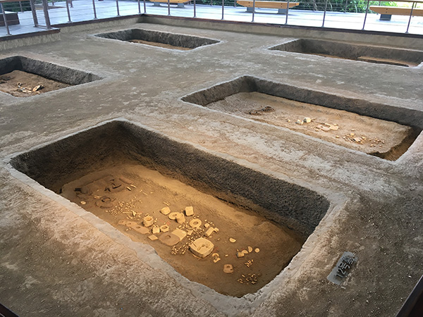

Arqueólogos descubren las razones de la desaparición de una antigua civilización china
Una antigua civilización china floreció hace 5300 años, a orillas del río Yangsté. No fue hasta la publicación en Science Advances, que no se tenían datos claros de su desaparición. El estudio acusa de todo a los cambios climáticos de la zona. La investigación de las ruinas deja en claro lo avanzados que eran como civilización, en especial en temas relacionados con la agricultura y la acuicultura. Sus habitantes construyeron sofisticadas estructuras y sistemas arquitectónicos, incluidos canales, presas y depósitos de agua.
Concretamente hablando, el estudio apunta a que fue una especie de inundación. “Se encontró una fina capa de arcilla en las ruinas conservadas. Esto apunta a una posible conexión entre la desaparición de la avanzada civilización y las inundaciones del río Yangtsé o las inundaciones del Mar del este de China” dijo Christoph Spötl de la Universidad de Innsbruck. los investigadores Examinaron formaciones minerales de dos cuevas submarinas en la región que conservaban las firmas químicas de las condiciones climáticas de hace miles de años. El análisis de las muestras de estalagmitas reveló que el colapso de la ciudad de Liangzhu coincidió con un período de precipitación extrema. Estas lluvias probablemente duraron décadas hace más de 4.300 años.